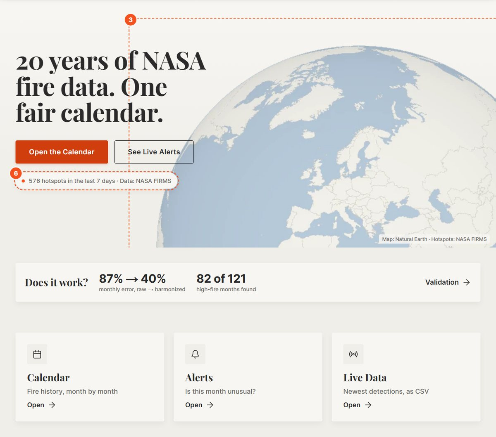
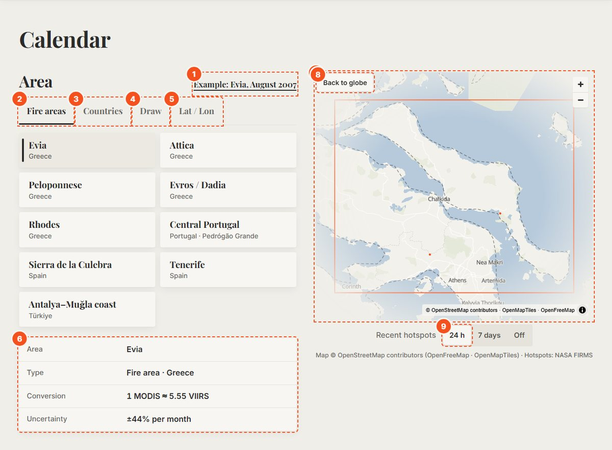
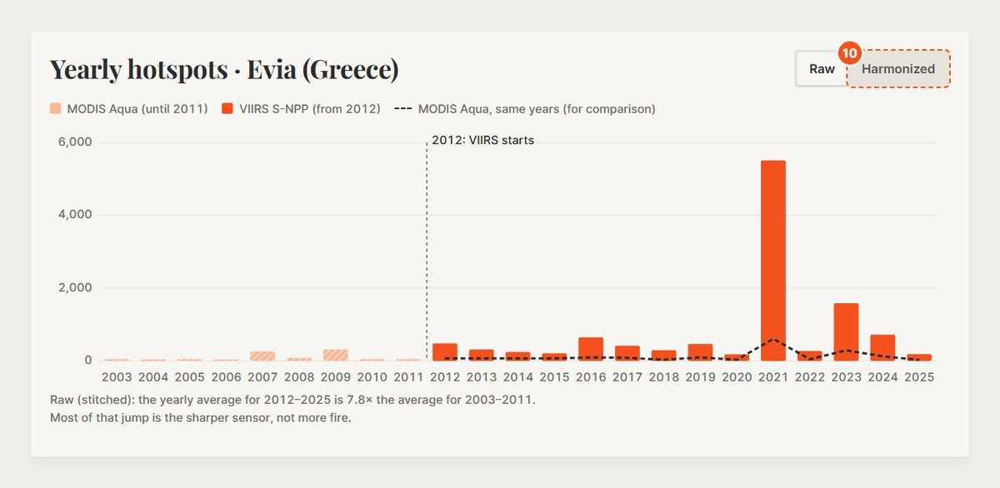
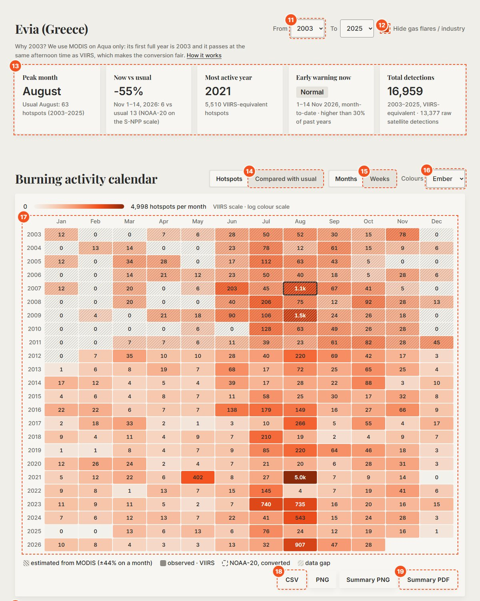
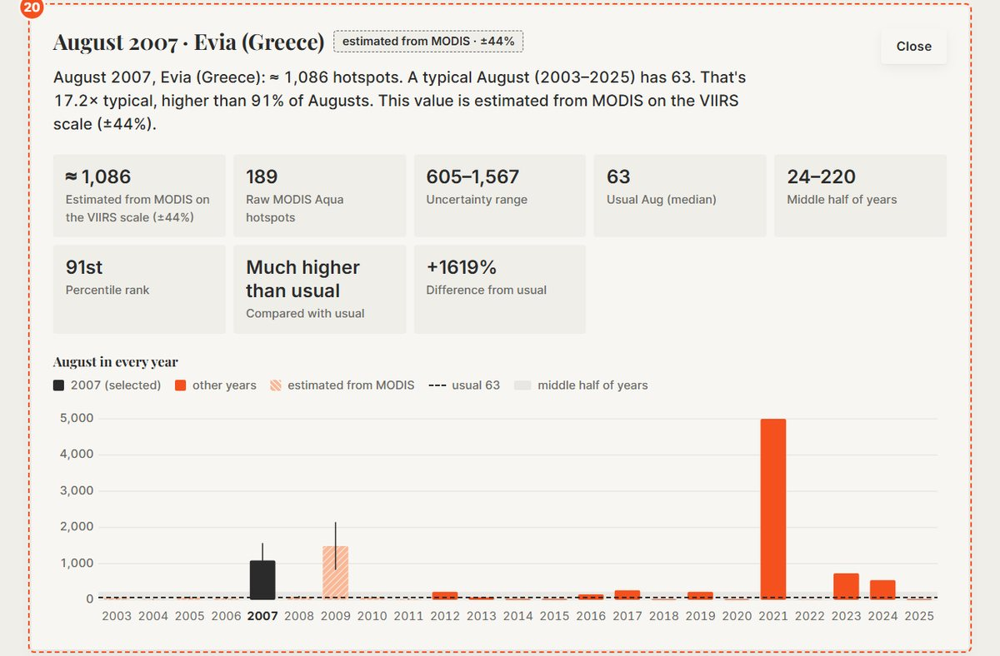
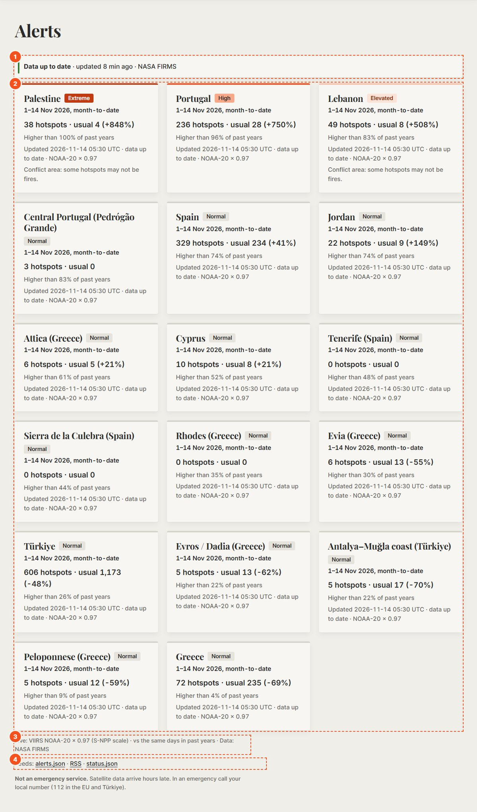
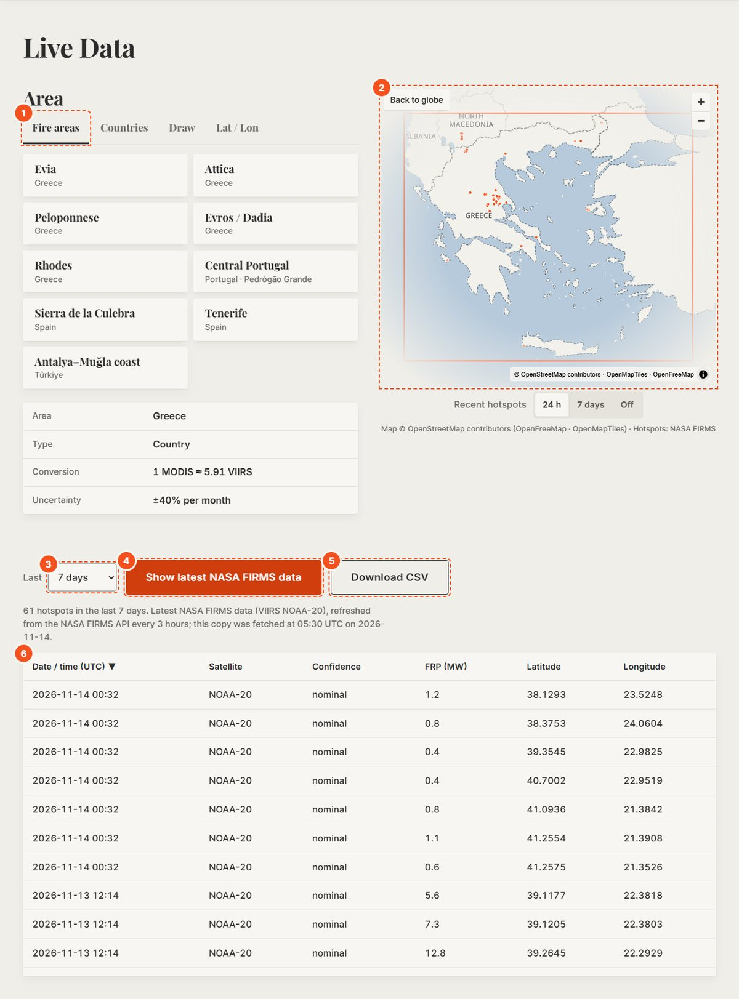
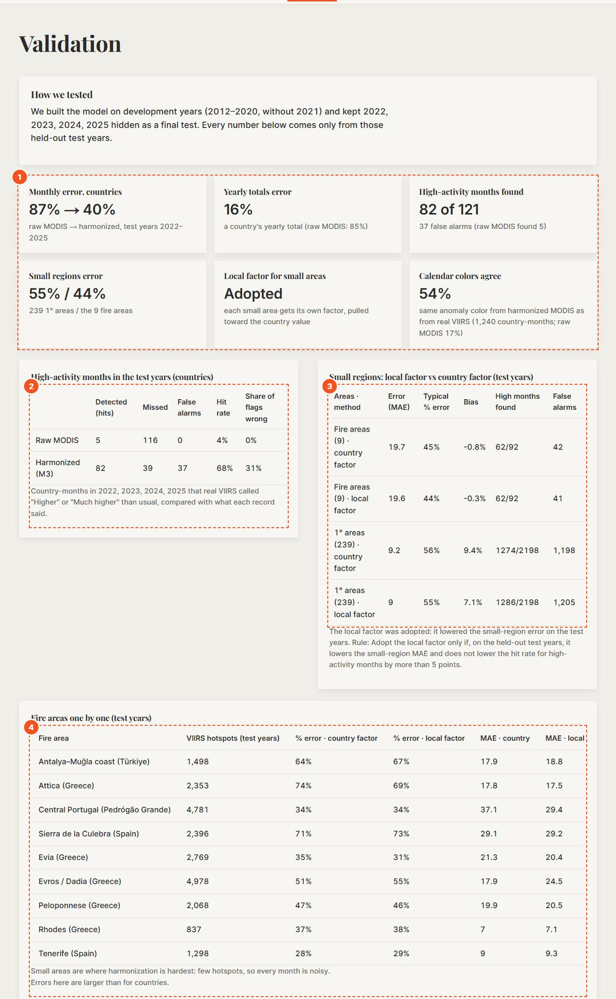
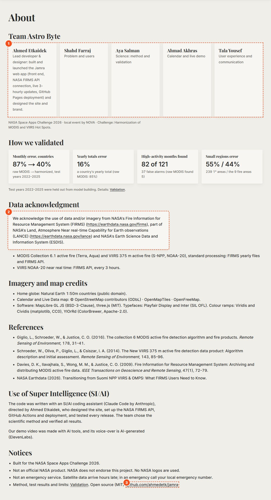

دليل قصير إلنا كفريق Astro Byte، عشان نفهم الموقع ونعرضه. مش للحكام. الموقع: https://ahmedetk.github.io/jamra/
ناسا عندها قمرين بيشوفوا الحرائق: القديم MODIS (من 2003) والجديد VIIRS (من 2012). الجديد أحدّ نظر، فبيلقط بؤر أكتر بحوالي 6.2×.
إذا حطّينا الأرقام ورا بعض بيطلع كأن الحرائق زادت فجأة سنة 2012، وهاد غلط. جمرة بتحوّل أرقام MODIS القديمة لمقياس VIIRS، فبيصير عنا سجل واحد عادل من 2003 لليوم.
وفوق هيك بتقارن كل شهر مع المعتاد لنفس الشهر، وبتجيب بيانات ناسا الجديدة كل 3 ساعات، عشان نعرف إذا الشهر الحالي غير عادي.
الأرقام بالصور هي نفس الأرقام بالقوائم.








تحت فيه كمان: الخطأ لكل طريقة، والمتوقع مقابل الفعلي، وثبات النسبة عبر السنين، والخطأ لكل دولة، ومقارنة الطرق، والحدود.

| الرقم | شو معناه |
|---|---|
| 6.2× | VIIRS بيلقط بؤر أكتر من MODIS بهالقد (بسنين التداخل). |
| 87% ← 40% | الخطأ الشهري قبل التحويل وبعده (سنين الاختبار 2022–2025). |
| 16% | الخطأ على مجموع السنة لدولة. |
| 82 من 121 | الأشهر العالية اللي لقطناها (MODIS الخام لقط 5 بس)، مع 37 إنذار غلط. |
| 55% / 44% | الخطأ بالمناطق الصغيرة: مربعات 1° / مناطق الحرائق التسعة. |
| 54% | نسبة الأشهر اللي لونها بالتقويم نفس لون VIIRS الحقيقي (بدون تحويل: 17%). |
| ±40% / ±16% | هامش الخطأ لشهر / لسنة. |
| ×0.97 | معامل NOAA-20 ← S-NPP للبيانات المباشرة. |
| 0.57 مقابل 0.40 | اختبار FRP: نسبة FRP أقل ثباتًا من العدد، فاستخدمنا العدد. |
| 1,086 (17.2×) | إيفيا آب 2007: عدد البؤر المقدّر (بين 605 و1,567) وقديش أكبر من وسيط آب. |
| 8 دول · من 2003 | البرتغال، إسبانيا، اليونان، تركيا، قبرص، لبنان، الأردن، فلسطين. |
لأنه VIIRS بلش 2012، فبنخسر 9 سنين، منها حرائق اليونان 2007.
ليش حوّلتوا القديم للجديد مش العكس؟لأنه البيانات المباشرة كلها VIIRS، فلازم التاريخ يكون على نفس مقياسها عشان نقارن «الآن» مع «المعتاد».
كيف بتعرفوا إنها شغالة؟خبّينا سنين 2022–2025 وما استخدمناها وإحنا نبني النموذج، وبعدين اختبرنا عليها: الخطأ نزل من 87% لـ 40%، ولقطنا 82 من 121 شهر عالي.
ليش بلّشتوا من 2003؟لأنا استخدمنا MODIS على القمر Aqua بس: أول سنة كاملة إله 2003، وبيمرق بنفس وقت VIIRS بعد الضهر، فبيشوفوا نفس الحرائق بنفس الساعة.
والنسبة بين القمرين ثابتة؟فحصناها سنة بسنة، واستخدمنا بس سنين التداخل الثابتة للمعايرة (رسم «Is the VIIRS / MODIS ratio stable over time?» بصفحة Validation).
ليش عدد البؤر مش FRP؟اختبرناها: نسبة FRP بين القمرين أقل ثباتًا (0.57 مقابل 0.40)، فضلّينا على العدد.
والمناطق الصغيرة؟إلها معامل لحالها بيقرب من معامل الدولة إذا البؤر قليلة، وهامش الخطأ فيها أكبر (±44%)، ومكتوب هيك على الموقع.
كل بؤرة يعني حريق غابة؟لأ. في حرق زراعي، وشعلات غاز، ومصانع. عنا فلتر بيشيل المصادر الثابتة، ومكتوب بالحدود.
منطقة برّا الدول الثمانية؟بتطلع رسالة واضحة إنه التاريخ المعدّل بس للدول الثمانية، وبرّاها في بيانات مباشرة بس، مع رابط لأقرب منطقة.
هل هي خدمة طوارئ؟لأ. بيانات الأقمار بتتأخر ساعات. هي أداة للإنذار المبكر والتخطيط.
استخدمتوا ذكاء اصطناعي؟آه، ومكتوب بصفحة About: الكود كُتب بمساعد برمجة (Claude Code من Anthropic) بتوجيه من أحمد اتكيدك، اللي صمّم الموقع، وجهّز واجهة ناسا وGitHub Actions والنشر، واختبر كل إصدار. والفريق اختار الطريقة العلمية وتحقق من كل النتائج.
الألوان مناسبة لعمى الألوان؟آه. اللوحة الافتراضية بتتدرّج بالفتاحة، وفي Viridis وCividis، والمقارنة دايمًا معها كلمة مكتوبة مش بس لون.